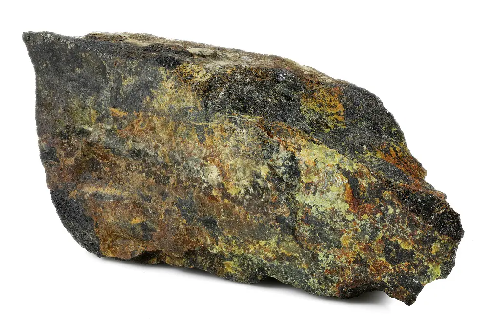

Полоний

Поло́ний — радиоактивный химический элемент 16-й группы (по устаревшей классификации — главной подгруппы VI группы), 6-го периода в периодической системе Д. И. Менделеева, с атомным номером 84, обозначается символом Po (лат. Polonium). Относится к группе халькогенов. При нормальных условиях представляет собой мягкий радиоактивный металл (согласно другим данным — полуметалл) серебристо-белого цвета, из-за высокой радиоактивности значительно нагревается.
Элемент открыт в 1898 году супругами Пьером Кюри и Марией Склодовской-Кюри в урановой смоляной руде. Об открытии они впервые сообщили 18 июля на заседании Парижской академии наук в докладе под названием «О новом радиоактивном веществе, содержащемся в смоляной обманке». Элемент был назван в честь родины Марии Склодовской-Кюри — Польши (лат. Polonia).В 1902 году немецкий учёный Марквальд выделил новый элемент, который он назвал радиотеллуром. Кюри, прочтя заметку об этом открытии, сообщила, что это — элемент полоний, открытый ими четырьмя годами ранее. Марквальд не согласился с такой оценкой, заявив, что полоний и радиотеллур — разные элементы. После ряда экспериментов с элементом супруги Кюри доказали, что полоний и радиотеллур обладают одним и тем же периодом полураспада. Марквальд был вынужден признать свою ошибку.
Выделение 210Ро из облучённых в ядерном реакторе нейтронами мишеней 209Bi (а также 209Ро при облучении в циклотроне протонами) ведут растворением, концентрированием и очисткой гидрометаллургическими методами. В меньших количествах 210Ро получают при переработке урановых руд (1 т руды содержит до 100 мг Ро). Годовое производство составляет около 100 г (2014).Способность 210Ро выделять большое количество тепла при α-распаде (140 Вт/г или 1210 Вт/см3) используется в атомных батарейках для космических аппаратов и переносных устройств. В сочетании с бериллием полоний применяют в качестве портативного источника нейтронов.Полоний и его соединения высокотоксичны.